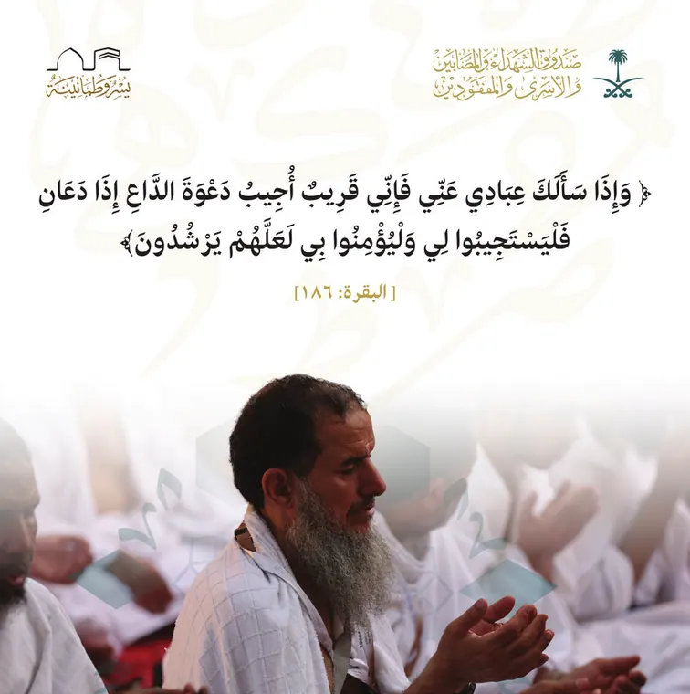
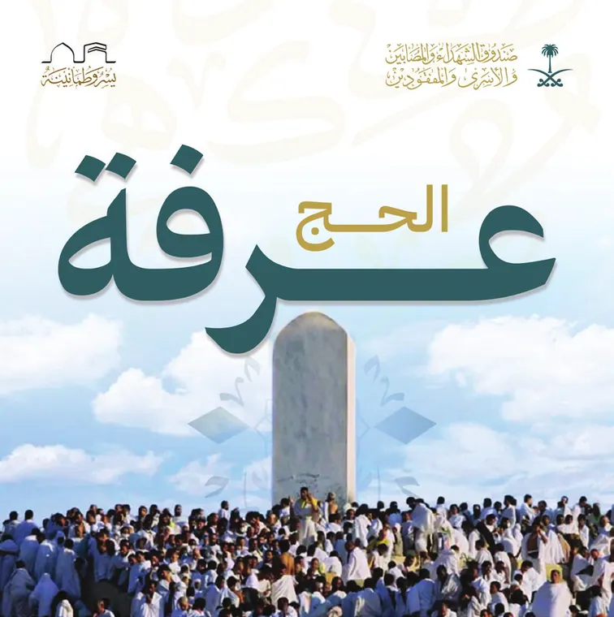
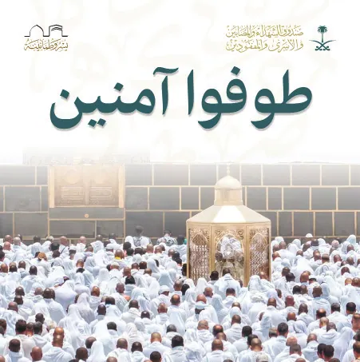

Eid al-Adha for the Martyrs’ Fund
Four posts for the Hajj season.
A social series for the Hajj season, built around four moments: supplication, Labbaik, the Day of Arafah and Tawaf. Calm calligraphy over pilgrim photography keeps the set quiet and consistent.
- Client
- Martyrs’ Fund
- Role
- Campaign design
- Scope
- 4 social posts
Following the pilgrim, step by step.
- The objective
- A dignified, spiritual presence for the Fund during the Hajj season.
- The idea
- Four posts follow the pilgrim’s journey: supplication, Labbaik, Arafah and Tawaf.
- Visual direction
- Large calligraphic headlines over light pilgrim photography, with generous white space.



